Procedimentos estéticos
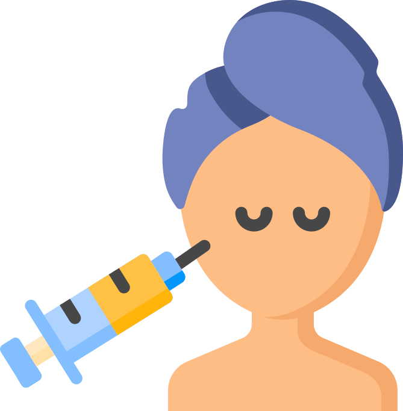
Toxina botulínica
Dê adeus para as rugas com os preenchimentos com o Botox! Conheça também os benefícios funcionais da toxina botulínica.
O preenchimento com Toxina botulínica é uma das melhores e menos invasivas soluções amenizar rugas
faciais. É ótimo para os "pés de galinha", linhas da testa e bigode chinês.
Descubra também o Botox preventivo, para que você "congele no tempo" e as rugas sequer apareçam.
Ainda há os usos terapêuticos, como para o tratamento de rangimento de dentes (ou bruxismo).
Descubra também o Botox preventivo, para que você "congele no tempo" e as rugas sequer apareçam.
Ainda há os usos terapêuticos, como para o tratamento de rangimento de dentes (ou bruxismo).
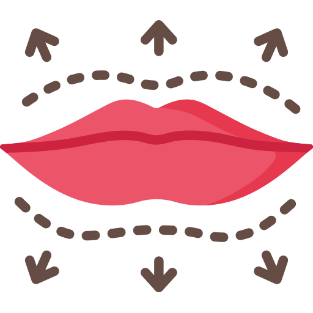
Preenchimento do rosto
Esconda suas marquinhas de expressão, realce os contornos do rosto e alcançe aquela boca dos sonhos!
O preenchimento com ácido hialurônico é utilizado para tratar diversas queixas, desde dar volume,
melhorar contornos e reestruturar a face.
É muito utilizado para corrigir assimetrias deixando o seu rosto mais harmônico.
O preenchimento pode ser realizado nas regiões de: mandíbula, lábios, bigode chinês, olheiras e muito mais.
É muito utilizado para corrigir assimetrias deixando o seu rosto mais harmônico.
O preenchimento pode ser realizado nas regiões de: mandíbula, lábios, bigode chinês, olheiras e muito mais.
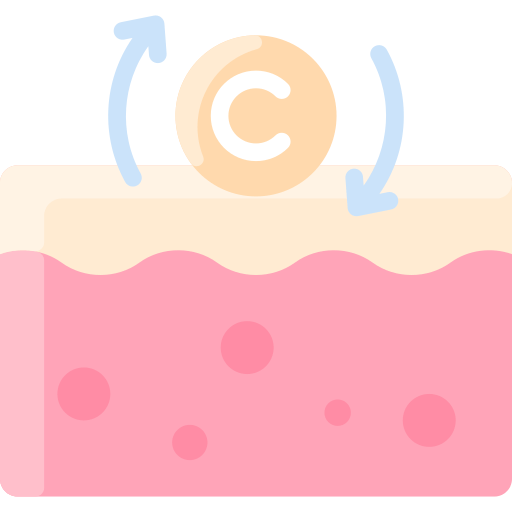
Bioestimuladores de colágeno
Congele o tempo mantendo o colágeno sempre por perto, para uma pele linda e firme.
Conforme o próprio nome sugere, bioestimuladores são ativos biocompatíveis com o organismo humano
(bio).
Quando aplicados na pele, eles estimulam (estimuladores) a produção de colágeno, proteína responsável pela sustentação e firmeza da pele.
Quando aplicados na pele, eles estimulam (estimuladores) a produção de colágeno, proteína responsável pela sustentação e firmeza da pele.
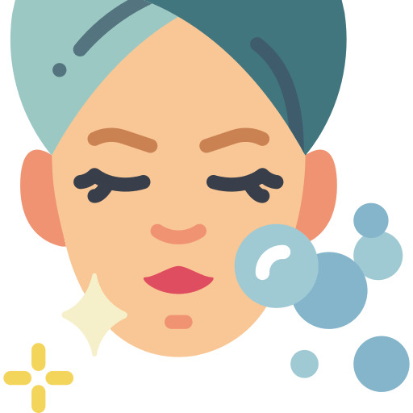
Peeling
Para uma renovação da pele e diminuição de manchas.
O peeling químico é um tipo de tratamento estético que é feito com a aplicação de ácidos sobre a
pele para
retirar as camadas danificadas e promover o crescimento de uma camada lisa,
podendo ser feito para eliminar manchas e linhas de expressão, por exemplo.
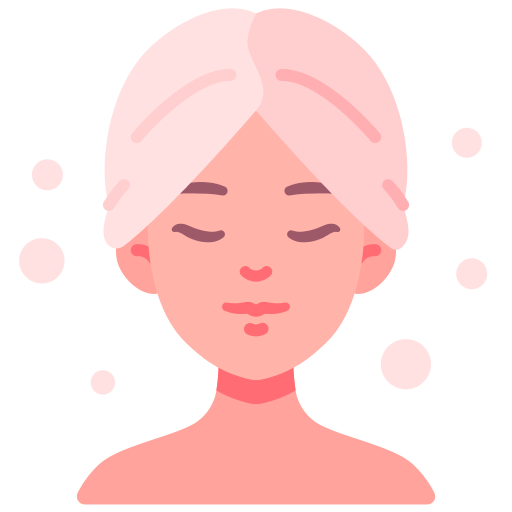
SkinBooster
Aquela "turbinada", para trazer uma pele mais hidratada e viçosa!
Skinbooster é um procedimento estético simples que, por meio do ácido hialurônico, hidrata
profundamente
a pele, gerando resultados superiores a qualquer dermocosmético por atuar nas camadas mais profundas
da pele
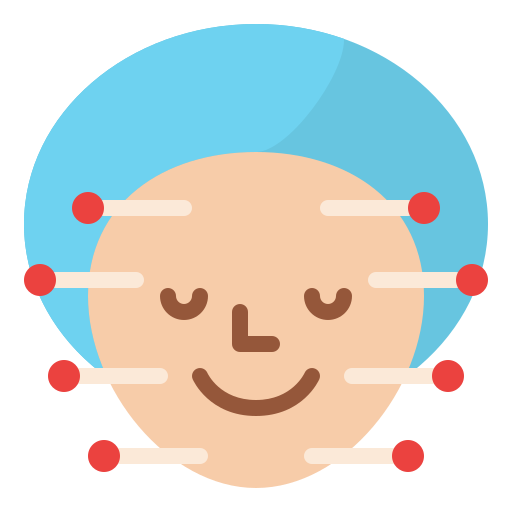
Microagulhamento
Bora tratar aquelas marquinhas e de quebra melhorar a firmeza do rosto com o Microagulhamento?
O microagulhamento é um procedimento feito com um equipamento cheio de pequenas agulhas que promovem
microlesões na pele.
Dessa maneira, ele estimula a produção de colágeno e de elastina, substâncias que dão sustentação e firmeza à pele.
Dessa maneira, ele estimula a produção de colágeno e de elastina, substâncias que dão sustentação e firmeza à pele.
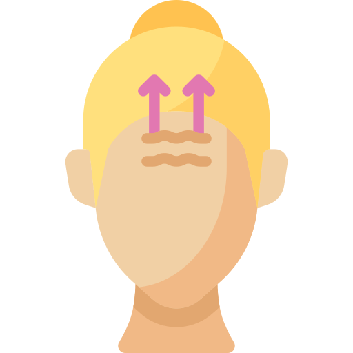
Fios PDO
Bora dar aquele "up" no rosto?!Com os Fios PDO você consegue a tão sonhada pele firminha.
Os fios de PDO são fios absorvíveis pelo organismo e que estimulam o corpo a produzir colágeno.
Ou seja, com o passar dos tempos eles naturalmente são absorvidos pelo corpo humano e promovem uma melhora da qualidade e firmeza da pele.
Ou seja, com o passar dos tempos eles naturalmente são absorvidos pelo corpo humano e promovem uma melhora da qualidade e firmeza da pele.
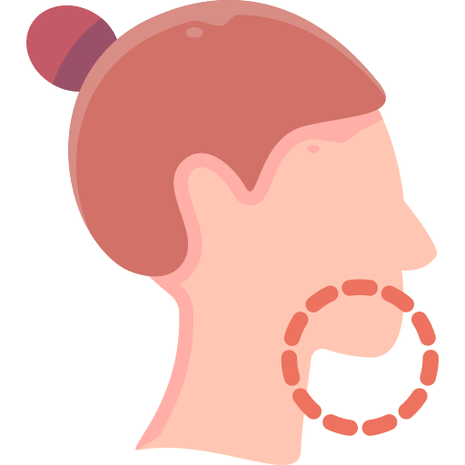
Lipo de papada
Removemos papada para que o único papo que fique, seja aquele legal que você tem com seus amigos. ;)
A lipo de papada enzimática é um procedimento sem corte ou sensação dolorosa para o paciente.
Consiste na aplicação de microinjeções na região da papada, as quais ajudam a reduzir o volume
gorduroso da região.
A lipo de papada aspirativa é um procedimento que consiste na aspiração da gordura localizada no pescoço, sob o queixo e na mandíbula. O tratamento é realizado com anestesia local e sedação, já que se trata de uma cirurgia.
A lipo de papada aspirativa é um procedimento que consiste na aspiração da gordura localizada no pescoço, sob o queixo e na mandíbula. O tratamento é realizado com anestesia local e sedação, já que se trata de uma cirurgia.
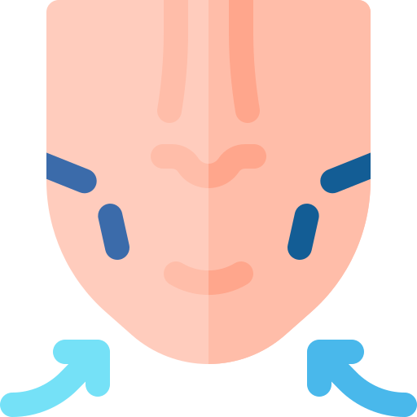
Bichectomia
Procura um rosto mais fino? Diminua as suas bochechas com uma bichectomia!
A bichectomia é um procedimento cirúrgico estético-funcional, cujo principal objetivo é reduzir o
tamanho das bochechas.
Para isso, retira-se as bolas de Bichat, que são um tecido gorduroso, localizado abaixo das maçãs do rosto.
Para isso, retira-se as bolas de Bichat, que são um tecido gorduroso, localizado abaixo das maçãs do rosto.
Tratamentos odontológicos
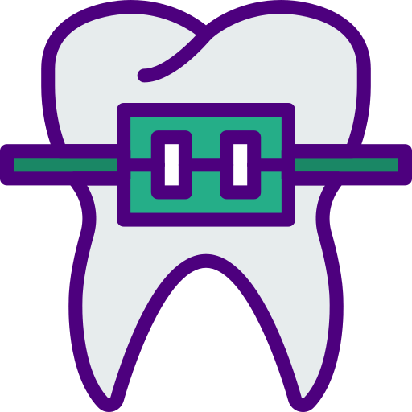
Ortodontia
Instalação de aparelhos dentários para alcançar o sorriso perfeito!
Especialidade odontológica que corrige a posição dos dentes e dos ossos maxilares posicionados de
forma inadequada.
Dentes tortos ou dentes que não se encaixam corretamente são difíceis de serem mantidos limpos, podendo ser perdidos precocemente, devido à deterioração e à doença periodontal.
Dentes tortos ou dentes que não se encaixam corretamente são difíceis de serem mantidos limpos, podendo ser perdidos precocemente, devido à deterioração e à doença periodontal.
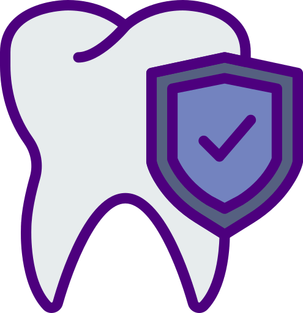
Periodontia
Tratamento e prevenção de doenças gengivais e dentárias, além de serviços como raspagem e limpeza.
Ramo da odontologia que se especializa no estudo dos tecidos normais e no tratamento das afecções
dos tecidos imediatamente próximos aos dentes.
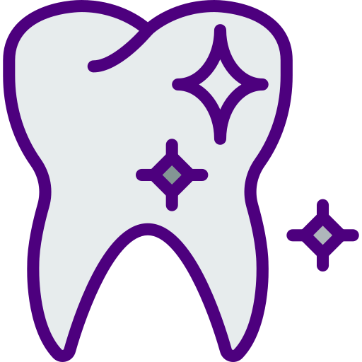
Dentística
Deixamos seu sorriso mais bonito com clareamentos e aplicação de facetas.
Dentística ou odontologia estética é o ramo da odontologia que atua na área da cosmética e
restauração dental.
Entre outros serviços, os profissionais desta especialidade tratam de clareamentos dos dentes, uso de resinas diretas, facetas, lentes de contato dental, e restaurações estéticas.
Entre outros serviços, os profissionais desta especialidade tratam de clareamentos dos dentes, uso de resinas diretas, facetas, lentes de contato dental, e restaurações estéticas.
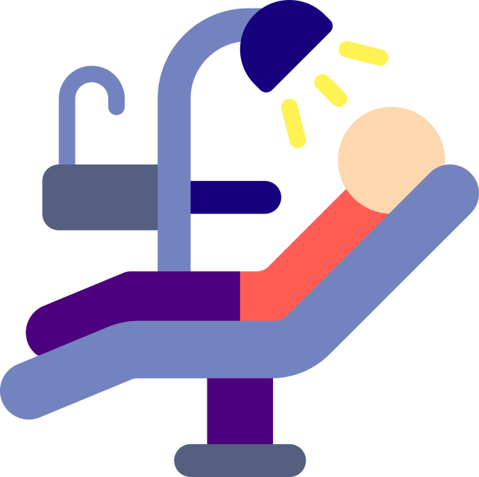
Odontopediatria
Cuidamos da saúde bucal de crianças de forma eficiente e descontraída.Sem traumas!
Especialidade da Odontologia que cuida da saúde bucal das crianças e pela qual elas têm o primeiro
contato com o dentista.
Quanto mais cedo ocorrer esse contato, mais positiva será sua imagem, facilitando o estabelecimento das práticas odontológicas, sem criar fobias na criança.
Além de ter conhecimento sobre as várias etapas do crescimento e desenvolvimento da criança.
Quanto mais cedo ocorrer esse contato, mais positiva será sua imagem, facilitando o estabelecimento das práticas odontológicas, sem criar fobias na criança.
Além de ter conhecimento sobre as várias etapas do crescimento e desenvolvimento da criança.
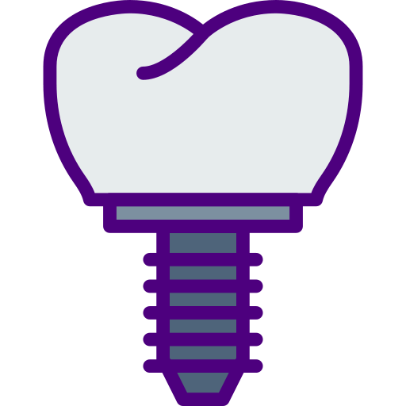
Próteses
Completamos seu sorriso utilizando próteses totais e parciais.
Visa substituir um ou mais dentes faltantes na boca do paciente.
Assim, além de devolver o sorriso, a autoestima e melhorar a estética, ela também contribui para a saúde, já que devolve as funções bucais, melhorando a mastigação, a fonética e, até mesmo, a respiração.
Assim, além de devolver o sorriso, a autoestima e melhorar a estética, ela também contribui para a saúde, já que devolve as funções bucais, melhorando a mastigação, a fonética e, até mesmo, a respiração.
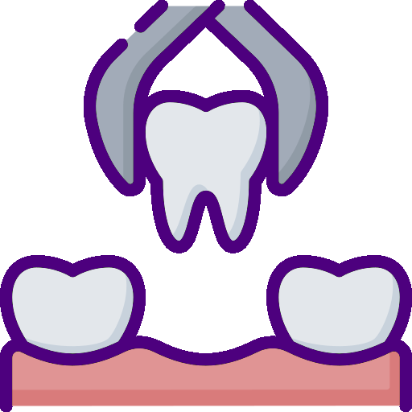
Cirurgia bucomaxilar
Soluções para desde a extração daquele siso complicado, até correções maxilares.
O cirurgião bucomaxilofacial, ou bucomaxilo, cuida de diversas patologias e condições relacionadas à
região da face como:
Traumatismos ou deformidades na face e nos maxilares;
Manifestações de outras doenças na cavidade bucal;
Tumores e cistos nos maxilares;
Alterações do desenvolvimento ósseo da face;
Fraturas faciais.
Traumatismos ou deformidades na face e nos maxilares;
Manifestações de outras doenças na cavidade bucal;
Tumores e cistos nos maxilares;
Alterações do desenvolvimento ósseo da face;
Fraturas faciais.
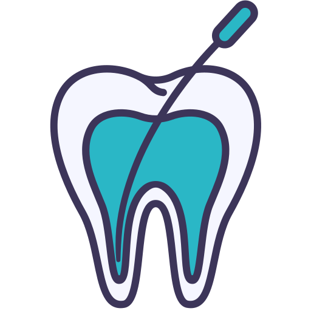
Endodontia
Acabe com a dor de dente com tratamentos de canal. Endodontia ou tratamento de canal é a remoção da polpa do dente, um
pequeno tecido semelhante a um fio que fica no interior do dente.
Depois que a polpa danificada, infeccionada ou morta é removida, o espaço restante é limpo, modelado e preenchido.
Antigamente, os dentes com polpa infeccionada ou afetada eram extraídos, já hoje, o tratamento de canal salva muitos dentes que, normalmente, seriam perdidos.
Depois que a polpa danificada, infeccionada ou morta é removida, o espaço restante é limpo, modelado e preenchido.
Antigamente, os dentes com polpa infeccionada ou afetada eram extraídos, já hoje, o tratamento de canal salva muitos dentes que, normalmente, seriam perdidos.
Profissionais
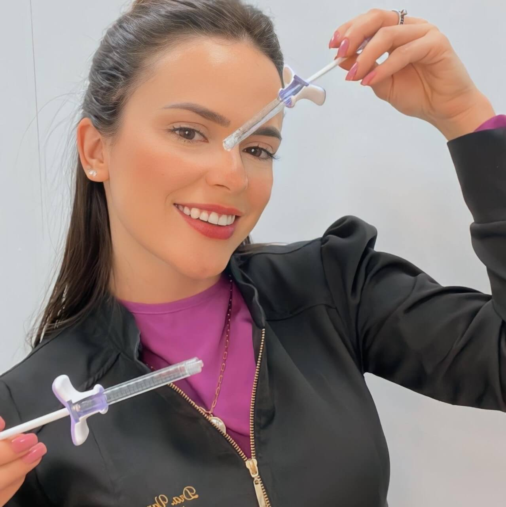
Dra. Vanessa de Paula Silva
Cirurgiã-Dentista
Especialista em Ortodontia
Pós-graduanda em HOF
Extensão em Odontopediatria
Extensão em Estética em Prótese Fixa
CRO/MG: 53599
Dr. Carlos Henrique
Especialista em Cirurgia Bucomaxilo-Facial
Especialista em Implantodontia
Professor de Pós Graduação em HOF
CRO/MG: 35103
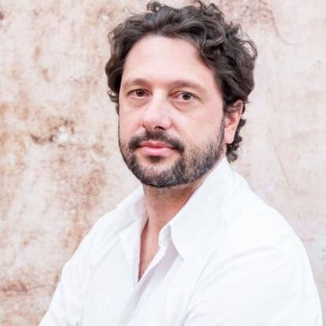
Dr. Carlos Henrique
Especialista em Cirurgia Bucomaxilo-Facial
Especialista em Implantodontia
Professor de Pós Graduação em HOF
CRO/MG: 35103

Dra. Beatriz Hostalácio
Cirurgiã-Dentista
Especialista em Endodontia
CRO/MG: 55724